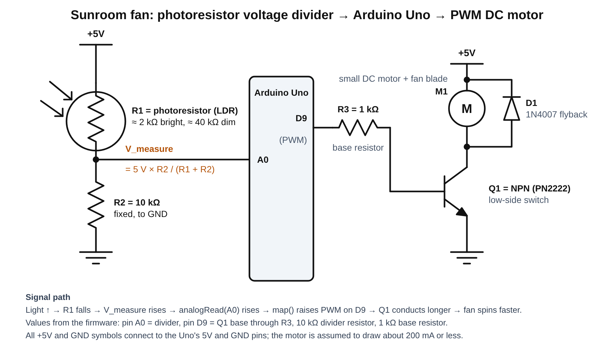
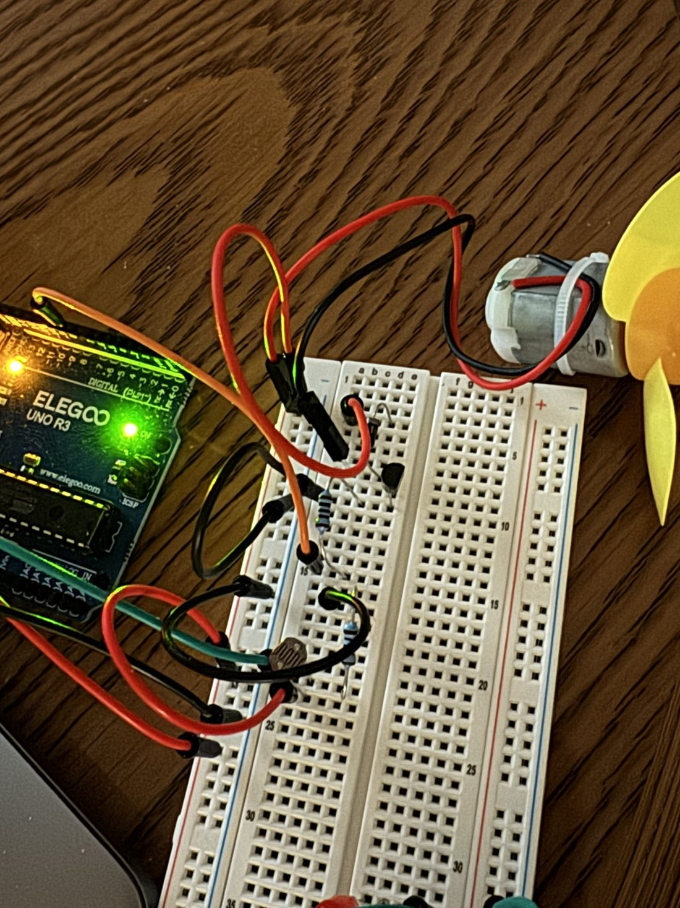
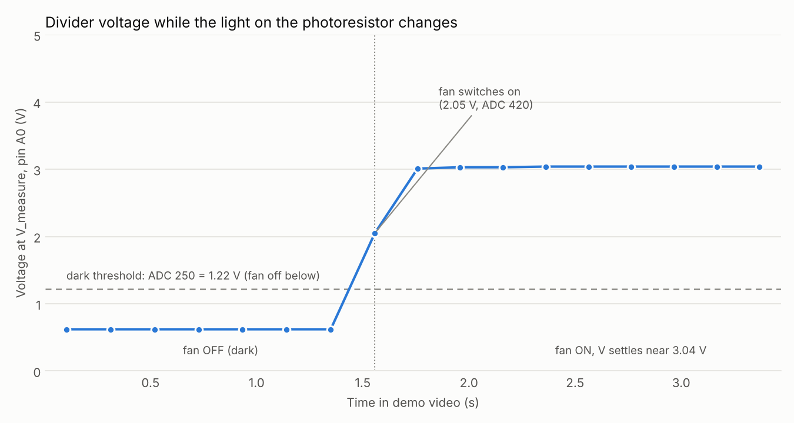

Assignment 3: Sunroom Fan
A photoresistor voltage divider senses how bright a room is, and an Arduino Uno turns that into the speed of a small DC motor fan. This is a prototype for a smart-home product that ventilates a sunny room faster as the light (and heat) increases and stays off when the room is dark.
1. What it does
The photoresistor (R1) and a fixed 10 kΩ resistor (R2) form a voltage divider. When the room gets brighter, R1 gets smaller, so the voltage at the divider output (V_measure) goes up. The Arduino reads V_measure on A0 with analogRead(), scales it with map(), and sends the result to pin D9 with analogWrite(). Pin D9 switches an NPN transistor that drives the motor, so brighter light means a faster fan. Below a darkness threshold, an if statement turns the fan off entirely. The Arduino also prints each reading to the serial monitor.
The output device is a small DC motor with a fan blade on the shaft (not a single LED).
2. Schematic

3. Choosing the resistor values (calculations)
Voltage divider: choosing R2
For the divider with the photoresistor on top (R1) and the fixed resistor on the bottom (R2):
V_measure = 5 V × R2 / (R1 + R2)
A typical CdS photoresistor is about 2 kΩ in bright indoor light and about 40 kΩ in dim light. In my own room I worked the resistance out from the Serial Monitor readings instead of a multimeter, using R1 = 10 kΩ × (1023 / A0 − 1): A0 = 127 in ordinary room light gives about 70 kΩ, and A0 = 904 with a phone flashlight on the sensor gives about 1.3 kΩ, a wider range than the typical values. To use as much of the 0–5 V range as possible, I picked R2 near the geometric mean of the two extremes:
R2 ≈ √(Rbright × Rdim) = √(2 kΩ × 40 kΩ) = √(80,000,000 Ω²) ≈ 8.9 kΩ
The nearest common value in my kit is 10 kΩ.
Check with my measured extremes: √(1.3 kΩ × 70 kΩ) ≈ 9.5 kΩ, so 10 kΩ is still a good choice.
What I should read at V_measure
Bright (R1 = 2 kΩ): V = 5 × 10k / (2k + 10k) = 4.17 V → ADC ≈ 4.17 / 5 × 1023 = 852
Medium (R1 = 10 kΩ): V = 5 × 10k / (10k + 10k) = 2.50 V → ADC ≈ 512
Dim (R1 = 40 kΩ): V = 5 × 10k / (40k + 10k) = 1.00 V → ADC ≈ 205
Dark (R1 = 100 kΩ): V = 5 × 10k / (100k + 10k) = 0.45 V → ADC ≈ 93
Transistor base resistor: choosing R3
I assumed the motor draws about 200 mA when running (check yours with a multimeter; a bigger motor needs an external supply). With R3 = 1 kΩ and about 0.7 V across the base–emitter junction when the pin is HIGH (5 V):
Ibase = (5 V − 0.7 V) / 1 kΩ = 4.3 mA (well below the Arduino pin's 20 mA recommended maximum)
Gain needed to saturate = 200 mA / 4.3 mA ≈ 47. A PN2222 has a gain of roughly 100 or more at 150 mA (check the datasheet), so it turns fully on.
4. Circuit
Breadboard layout (wiring guide)

5. Firmware
// Analog input pin wired to the divider's V_measure node (between the photoresistor and the 10 kOhm resistor)
const int LIGHT_PIN = A0;
// PWM-capable output pin wired through the 1 kOhm base resistor R3 to the base of transistor Q1
const int MOTOR_PIN = 9;
// Reading below this means the room is too dark to need cooling: 250 is about 1.22 V, which is a photoresistor of about 31 kOhm
const int DARK_THRESHOLD = 250;
// Brightest reading expected in my room: 850 is about 4.15 V, which is a photoresistor of about 2 kOhm
const int LIGHT_MAX = 850;
// Lowest PWM duty that reliably starts my motor: 80 out of 255 is about 31 percent
const int PWM_MIN = 80;
// Highest value analogWrite() accepts (8-bit), which is 100 percent duty and full fan speed
const int PWM_MAX = 255;
// Milliseconds to wait between samples, 200 ms gives 5 readings per second
const int SAMPLE_DELAY_MS = 200;
// setup() runs once when the Arduino powers up or resets
void setup() {
// Open the serial connection to the computer at 9600 baud so I can watch the readings
Serial.begin(9600);
// Make the motor pin an output so it can drive the transistor base
pinMode(MOTOR_PIN, OUTPUT);
}
// loop() runs over and over forever after setup() finishes
void loop() {
// Read the divider voltage as a 10-bit number from 0 (0 V) to 1023 (5 V)
int lightValue = analogRead(LIGHT_PIN);
// Convert the 0-1023 reading back into volts so I can compare it with my hand calculations
float volts = lightValue * 5.0 / 1023.0;
// Variable that will hold the 8-bit PWM value (0-255) sent to the motor
int fanSpeed;
// Check whether the room is darker than my threshold
if (lightValue < DARK_THRESHOLD) {
// Too dark to need the fan, so switch the motor fully off
fanSpeed = 0;
// Otherwise the room is bright enough that the fan should run
} else {
// Scale the light reading (250 to 850) to a motor PWM value (80 to 255)
fanSpeed = map(lightValue, DARK_THRESHOLD, LIGHT_MAX, PWM_MIN, PWM_MAX);
// Clamp the result because map() does not limit values outside the input range (readings above 850)
fanSpeed = constrain(fanSpeed, PWM_MIN, PWM_MAX);
}
// Send the PWM value to the transistor base, which sets the fan speed
analogWrite(MOTOR_PIN, fanSpeed);
// Start the serial line with a label and the time since power-up so I can graph voltage against time later
Serial.print("Sunroom fan | t=");
// Print the milliseconds since the Arduino started
Serial.print(millis());
// Print a separator and label for the raw ADC reading
Serial.print(" ms | A0=");
// Print the raw 0-1023 reading
Serial.print(lightValue);
// Print a separator and label for the voltage at V_measure
Serial.print(" | V=");
// Print the voltage rounded to two decimal places
Serial.print(volts, 2);
// Print a separator and label for the PWM value
Serial.print(" V | PWM=");
// Print the 0-255 value sent to the motor
Serial.print(fanSpeed);
// Print the fan state and end the line with a newline
Serial.println(fanSpeed == 0 ? " | fan OFF (dark)" : " | fan ON");
// Wait before the next reading so the serial monitor is readable and the divider has time to settle
delay(SAMPLE_DELAY_MS);
}
Why these values, and what they correspond to in the circuit
| Value in code | What it corresponds to | Why I chose it |
|---|---|---|
LIGHT_PIN = A0 | Wire from the V_measure node (between R1 and R2) in Figure 1 | A0 is an analog input; the 10-bit ADC converts 0–5 V into 0–1023. |
MOTOR_PIN = 9 | Wire from D9 through R3 (1 kΩ) to the base of Q1 | Pin 9 is a PWM pin (3, 5, 6, 9, 10, 11 on the Uno), so analogWrite() works on it. |
DARK_THRESHOLD = 250 | 250 × 5 / 1023 ≈ 1.22 V, so R1 ≈ 10 kΩ × (5 / 1.22 − 1) ≈ 31 kΩ | Below this the room is too dim for a ventilation fan to be useful, so the if turns it off. A dim room (R1 ≈ 40 kΩ, ADC ≈ 205) falls below the threshold and the fan is off; a medium room (R1 ≈ 10 kΩ, ADC ≈ 512) is above it and the fan runs. |
LIGHT_MAX = 850 | 850 × 5 / 1023 ≈ 4.15 V, so R1 ≈ 2 kΩ | The bright-light case from Section 3 (R1 ≈ 2 kΩ gives about 852). Readings at or above this get full speed. |
PWM_MIN = 80 | 80 / 255 ≈ 31 % duty at D9, i.e. about 1.6 V average on the pin (5 V × 0.31) | Small DC motors usually just hum without turning at low duty; about 30 % is a typical starting point. In my demo the fan was already spinning at PWM 129 to 188; I did not test lower duty cycles, so 80 is a starting point rather than a measured minimum. |
PWM_MAX = 255 | 100 % duty on D9, motor gets the full 5 V | analogWrite() is 8-bit, so 255 is the maximum. |
5.0 / 1023.0 | 5 V reference voltage divided by the ADC's 1023 maximum count | Converts the count back to volts so I can check it against the hand calculations in Section 3. |
6. Circuit operation
map() gives PWM = 129 and the fan starts. One sample later A0 = 615 gives PWM = 186, and the reading then settles near A0 = 621 (3.04 V, PWM = 188) while the fan keeps spinning. Download the video (MP4).Serial monitor output
Serial Monitor lines (9600 baud) from the run in Figure 3, one reading about every 0.2 s. The same lines are in serial_log.txt.
Sunroom fan | t=629394 ms | A0=127 | V=0.62 V | PWM=0 | fan OFF (dark)
Sunroom fan | t=629602 ms | A0=127 | V=0.62 V | PWM=0 | fan OFF (dark)
Sunroom fan | t=629809 ms | A0=127 | V=0.62 V | PWM=0 | fan OFF (dark)
Sunroom fan | t=630017 ms | A0=127 | V=0.62 V | PWM=0 | fan OFF (dark)
Sunroom fan | t=630224 ms | A0=127 | V=0.62 V | PWM=0 | fan OFF (dark)
Sunroom fan | t=630431 ms | A0=127 | V=0.62 V | PWM=0 | fan OFF (dark)
Sunroom fan | t=630639 ms | A0=127 | V=0.62 V | PWM=0 | fan OFF (dark)
Sunroom fan | t=630847 ms | A0=420 | V=2.05 V | PWM=129 | fan ON
Sunroom fan | t=631048 ms | A0=615 | V=3.01 V | PWM=186 | fan ON
Sunroom fan | t=631249 ms | A0=620 | V=3.03 V | PWM=187 | fan ON
Sunroom fan | t=631451 ms | A0=620 | V=3.03 V | PWM=187 | fan ON
Sunroom fan | t=631652 ms | A0=621 | V=3.04 V | PWM=188 | fan ON
Sunroom fan | t=631854 ms | A0=621 | V=3.04 V | PWM=188 | fan ON
Sunroom fan | t=632055 ms | A0=622 | V=3.04 V | PWM=188 | fan ON
Sunroom fan | t=632256 ms | A0=621 | V=3.04 V | PWM=188 | fan ON
Sunroom fan | t=632458 ms | A0=622 | V=3.04 V | PWM=188 | fan ON
Sunroom fan | t=632659 ms | A0=622 | V=3.04 V | PWM=188 | fan ONThe values match the calculations in Section 3. In dark room light A0 = 127 (0.62 V), which is a photoresistor of about 70 kΩ and is below the dark threshold, so PWM = 0. When the light increases, A0 rises to about 621 (3.04 V, photoresistor about 6.5 kΩ) and map() turns that into PWM = 188. Each PWM value agrees with map(A0, 250, 850, 80, 255): for example A0 = 420 gives (420 − 250) × 175 / 600 + 80 gives 129 with the Arduino’s whole-number math. Earlier, with a phone flashlight right on the sensor, I saw A0 up to 904 (4.42 V), which is above LIGHT_MAX = 850, so constrain() held the PWM at 255. The real photoresistor is dimmer in room light than the 40 kΩ I assumed, but the divider and thresholds still work.
7. Additional questions
Q1. Can the variable resistor be R1 or R2, or does it have to be one of them?
It can be either. A voltage divider works the same way no matter which position the changing resistor is in. What changes is the direction of the voltage change. Using Rfixed = 10 kΩ and the photoresistor values from above:
| Light | Photoresistor | Photoresistor as R1 (top) V = 5 × 10k / (Rldr + 10k) | Photoresistor as R2 (bottom) V = 5 × Rldr / (10k + Rldr) |
|---|---|---|---|
| Bright | 2 kΩ | 4.17 V | 0.83 V |
| Medium | 10 kΩ | 2.50 V | 2.50 V |
| Dim | 40 kΩ | 1.00 V | 4.00 V |
| Swing (bright − dim) | +3.17 V | −3.17 V |
Both arrangements give the same size of voltage swing (3.17 V), just mirrored: with the photoresistor on top, brighter light gives a higher voltage; on the bottom, brighter light gives a lower voltage. Either way the Arduino can read it. I chose the photoresistor on top so that "more light → bigger number → faster fan" without having to reverse the map() arguments. If I had put it on the bottom, every reading would be mirrored (new reading ≈ 1023 − old reading), so I would flip the comparison and the map() input range to get the same behavior: if (lightValue > 773) for dark, and map(lightValue, 773, 173, PWM_MIN, PWM_MAX) for the speed.
Q2. Graph of V_measure against time

Q3. What changes with 10-bit PWM and a 16-bit ADC?
The map() call has to use the new number ranges on both sides, because map() just rescales between whatever input and output ranges you give it. A 16-bit ADC returns 0–65535 instead of 0–1023 (65535 / 1023 ≈ 64 times bigger), and 10-bit PWM accepts 0–1023 instead of 0–255 (1023 / 255 ≈ 4 times bigger). The physical meaning of each threshold doesn't change, so I convert each constant by the same ratio:
| Constant | Now (10-bit ADC / 8-bit PWM) | 16-bit ADC / 10-bit PWM | How |
|---|---|---|---|
DARK_THRESHOLD (1.22 V) | 250 | ≈ 16015 | 250 × 65535 / 1023 |
LIGHT_MAX (4.15 V) | 850 | ≈ 54452 | 850 × 65535 / 1023 |
PWM_MIN (31 % duty) | 80 | ≈ 321 | 80 × 1023 / 255 |
PWM_MAX (100 % duty) | 255 | 1023 | maximum of 10 bits |
fanSpeed = map(lightValue, 16015, 54452, 321, 1023);
fanSpeed = constrain(fanSpeed, 321, 1023);
float volts = lightValue * 5.0 / 65535.0; // the voltage conversion also changesOther things to watch for: (1) the divider and the voltages do not change, so the fan behaves the same way; only the numbers in the code change. (2) map() uses 32-bit integer math, and the largest intermediate value here is about (54452 − 16015) × (1023 − 321) ≈ 27 million, which fits. (3) The finer steps help only if the signal is clean: one 16-bit step is 5 V / 65535 ≈ 76 µV compared with about 4.9 mV for 10 bits, and the photoresistor and wiring are noisier than that, so the lowest bits would mostly be noise unless I average several readings. (4) On the Uno itself, analogWrite() is fixed at 8 bits; on boards with adjustable resolution you would first call analogWriteResolution(10).
8. Use of AI tools
Yes. I used Claude on this assignment. Claude helped me with:
- give me sudo code and debugging suggestions;
- drawing the schematic, and writing the script that plots the voltage graph;
- drafting this webpage from my notes and proofreading my answers
- troubleshooting when the fan did not spin.